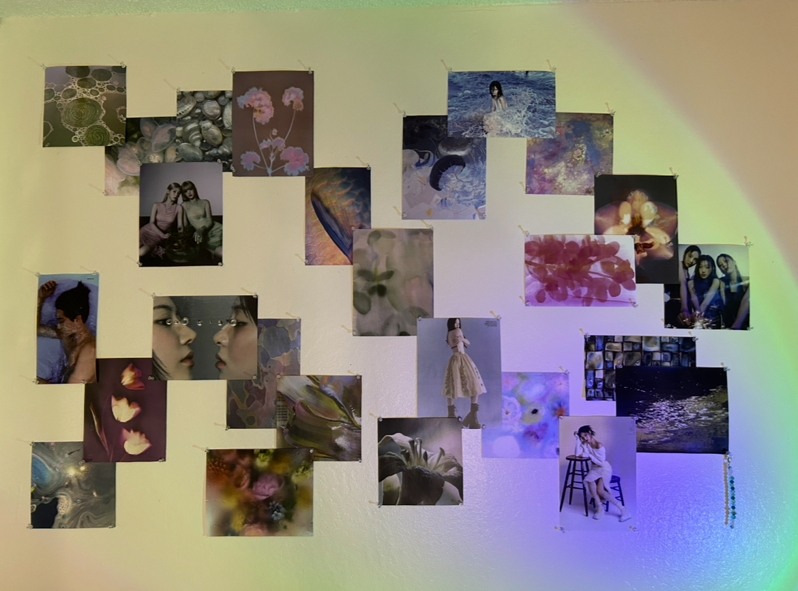

Gallery
This assortment of posters was one of my first ever projects for this room. I purposely curated the color scheme to match both my roommate and I's duvet colors and the aquatic theme our room has slowly began incorporating. The wall includes a lot of graphic design elements/posters that I really enjoy as well as editorial-esque photoshoots that I really enjoy since I have a soft spot for fashion. I try to make sure that no two posters look the same but that it maintains the sentiment of being cohesive.